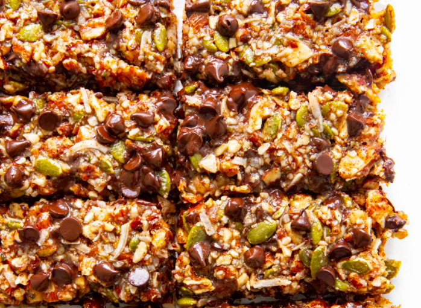

Chocolate Nut Granola Bar

Ingredients:
- 1/3 cup Brazil nuts
- 1/3 cup Walnuts
- 1/3 cup Pecans
- 1/3 cup Pumpkin seeds
- 1/3 cup Pistachios
- 1/3 cup Macadamia nuts
- 15 Tbsp Allulose
- 4 tbsp Butter
- 1 tbsp Coconut oil
- 1/4 tsp Sea salt
- 3/4 cup Sugar-free chocolate chips
Instructions:
- Bake brazil nuts, walnuts, and pumpkin seeds in oven at 350 F for 12 minutes. Bake pecans and pistachios in oven at 350 F for 7 minutes.
- Coarsely chop brazil nuts, walnuts, and pecans in a food processor.
- Line a 9 x 9 square baking pan with parchment paper.
- Combine allulose, butter, and coconut oil over medium-high heat. Simmer rapidly, stirring frequently, until the mixture thickens and turns golden.
- Stir the combined nuts and sea salt into the syrup. Pour into the baking pan. Press flat with a spatula or wooden spoon. Sprinkle the chocolate chips on the hot nut mixture. It should be hot enough that they melt a little and stick.
- Cool to room temperature. Refrigerate for at least 30 minutes. Lift the parchment paper out of the pan. Cut the granola bars using a sharp knife.
Back to index of Recipes